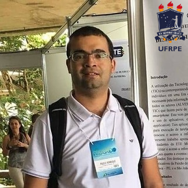
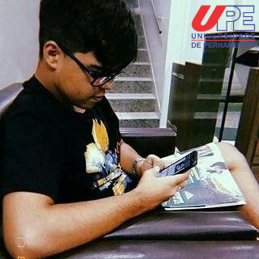

Equipe Serpentes-pe
Uma ferramenta computacional informativa para diagnosticar e auxiliar no tratamento do envenenamento por serpentes.
Ivaldir de Farias Junior, Graduado em Tecnologia em Processamento de Dados pela FACIR/FAPE(2004). Mestre (2008), Doutor e Pós-Doutor em Ciência da Computação pela UFPE. Profissional certificado em Teste de Software pelo BSTQB/ISTQB, Implementador e Avaliador MPT.BR, Implementador MPS.BR SV e Avaliador Certics, certificado ScrumMaster pela Scrum Aliance. Possui mais de 20 anos de experiência em tecnologia da informação e 13 anos atuando como professor universitário. Atualmente é professor UPE, consultor de processos e melhoria da qualidade do SOFTEX/Recife e pesquisador do grupo de pesquisa (GP2) – Project Research Group da UFPE.
Paulo Henrique Ramos é especialista em engenharia de sistemas, atualmente é mestrando em informática aplicada na UFRPE e trabalha na ETE Ministro Fernando Lyra e no colégio Sagrado coração de Caruaru.

Juliana Mendes Correia é Doutora em Ciências Biológicas pela UFPE(2007-2011), Mestra em Biologia Animal pela UFPE(2004), Bacharela em Ciências Biológicas pela UFRPE(2004) e Acadêmica em Direito pela Faculdade de Olinda (2018).Tem experiência na área de Bioquímica, Biofísica e Microbiologia com ênfase em Biologia Molecular e Química de Proteínas. Seus principais interesses de investigação compreendem os polipeptídeos e proteínas farmacologicamente ativos, Epidemiologia de acidentes por animais peçonhentos, Microrganismos de uso biotecnológicos e Tecnologia de alimentos. Atualmente Coordena o Núcleo de Inovação e Pesquisa da UNISÃOMIGUEL - Recife-PE.
José Ferreira dos Santos Júnior, atualmente cursando o segundo período de Engenharia de Software na Universidade de Pernambuco (Campus Garanhuns).

Maria Lucineide Porto Amorim é médica toxicologista e coordenadora do Centro de Informação e Assistência Toxicológica de Pernambuco ( CIATox)